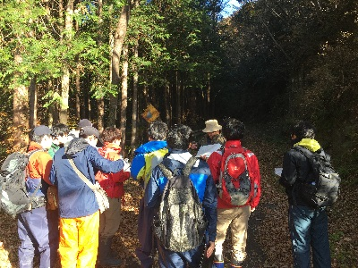
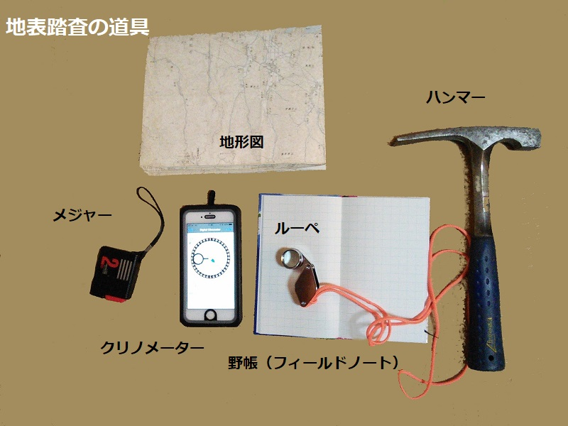

| 調査ルートを確認す る | |
| 実際に野外で地質調査を行
うときは、地層が見える崖（露頭）を観察して、その観察結果を地図上にプロットしていきます。地層は、川の侵食によって露出することが多いため、
川沿いの崖や沢の河床などを通るような調査ルートを設定します。 調査ルートに沿って露頭ごとにを観察を行い、岩相、堆積構造などの特徴や走向・傾斜などの測定結果を、野帳（フィールドノート）や地形図に書き入 れていきます。 |
 |
| 地表踏査に持ってい くもの | |
| 調査には右のような道具が
必要です。このほかに岩石を採取するためのサンプル袋（または新聞紙）、ハンマー使用時の保護メガネ、色鉛筆等も必要でしょう。 また、調査ルートの地形や気候、調査日程に合わせて、帽子、長靴、虫よけ、水筒などの装備も必要となってきます。 |
 |